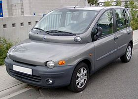

Üdvözöllek!
A nevem Sorbán Péter, 22 éves webfejlesztő vagyok, a szülővárosomban, Tatabányán élek.
Hobbijaim közé a videójátékok, videókészítés és -szerkesztés, zene, az irodalom tartozik. Az informatika mindig is részese volt az életemnek, az elmúlt 5 évben pedig egyre nagyobb hangsúlyt fektetek a mélyebb, behatóbb ismeretek megszerzésére.
A zene inkább fogyasztásként szerepel, az irodalmat is inkább élvezem mint alkotom.
Alább egy referenciamunka:
